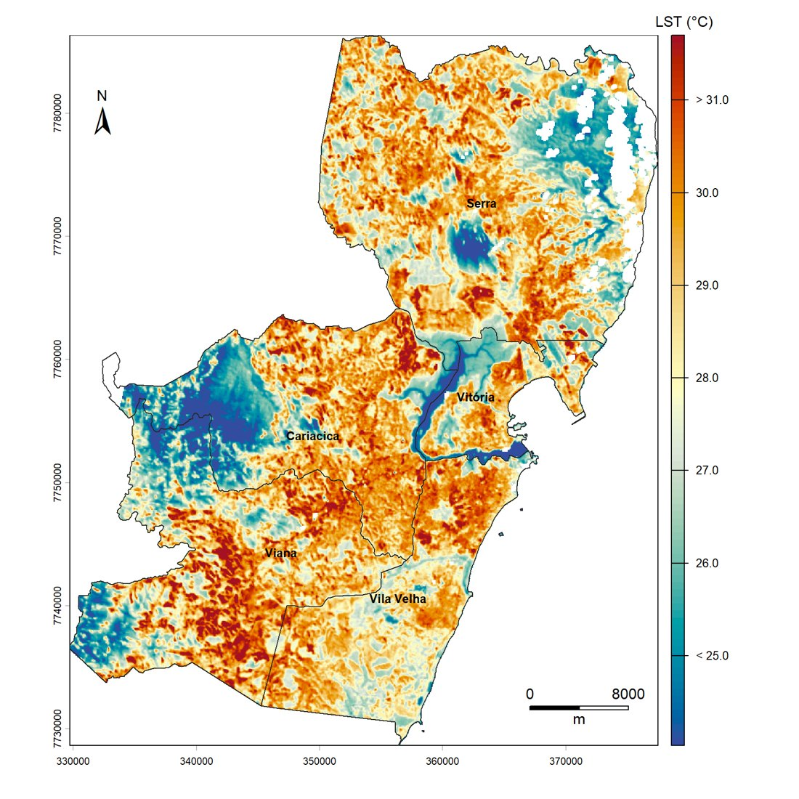
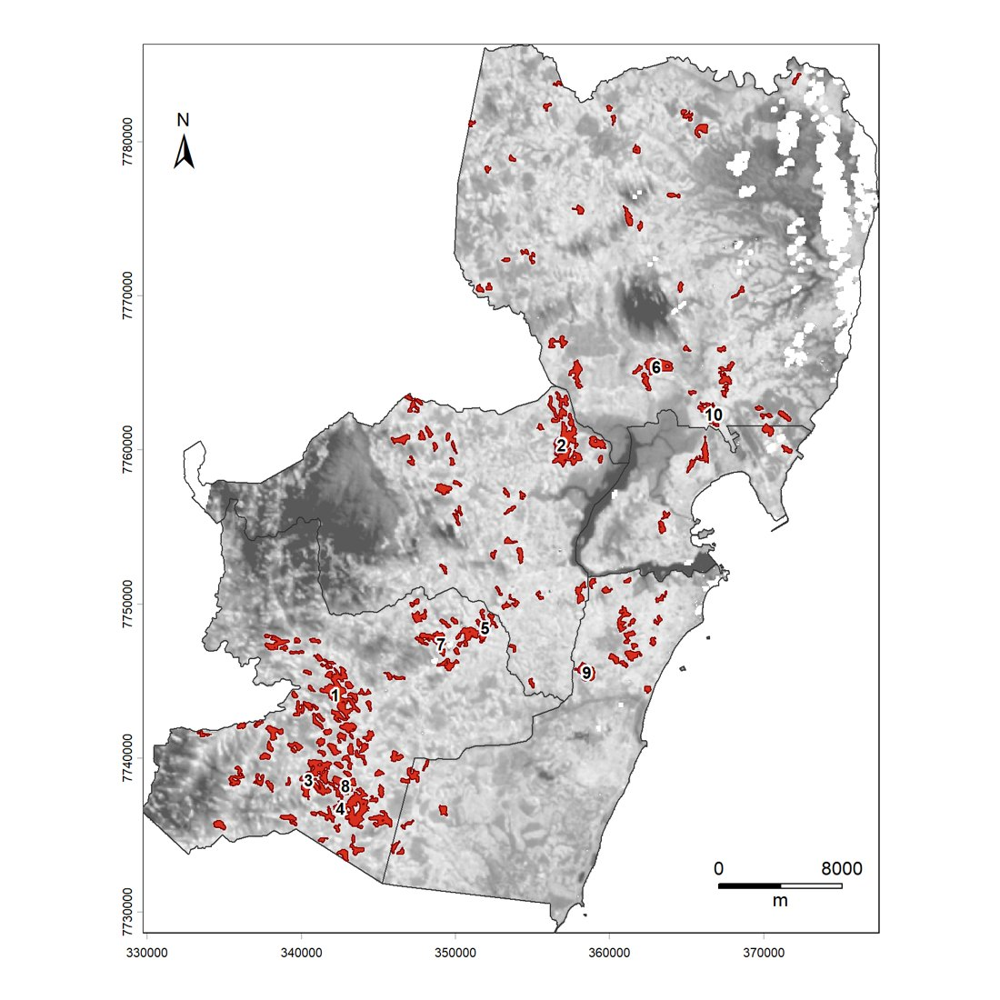

cena de 01/09/2026, 09h38
O mapa térmico
1.436 km² analisados, com nuvens e sombras removidas pela banda de qualidade da cena. As cores vão do azul (mais frio) ao vermelho (mais quente).


Principais achados
O que os dados mostram sobre o calor na Grande Vitória nesta data.
A vegetação resfria a paisagem
Vegetação densa e água registraram as menores temperaturas. A relação entre NDVI e LST é clara e negativa (r = −0,61).
O calor não é só urbano
Pastagens secas e solo exposto, sobretudo no interior de Viana, aqueceram tanto quanto a cidade e concentram boa parte das manchas de calor.
Ilha de calor urbana atenuada
Pela manhã e no fim do inverno, a brisa marinha tende a suavizar o aquecimento dos núcleos urbanos do litoral.
Como foi feito
Cena Landsat 9 Collection 2 Level-1 (USGS), com as constantes de calibração lidas do arquivo de metadados da própria cena.
Relatório técnico completo
Metodologia, equações, tabelas por município e cobertura do solo, comparação entre métodos e limitações.